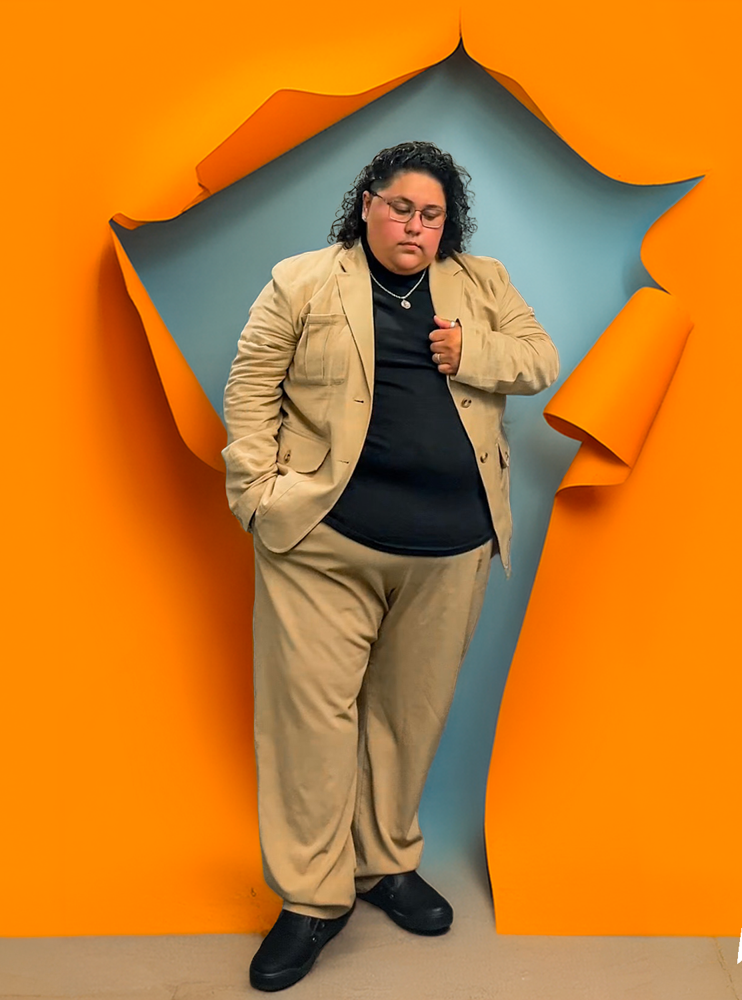

Interactive Journalism
When New Housing Meets Old Streets
A multimedia investigation into housing density and the growing fight for street parking in Los Angeles' San Fernando Valley.
Journalism · Media · Storytelling
Multimedia journalist, communications professional, and digital storyteller creating work at the intersection of culture, community, visual storytelling, and media.
Speech Views
Social Likes
Events Photographed
Stories To Tell
01 — About
I'm a multimedia storyteller interested in the people, communities, and experiences that often exist outside the center of a camera frame.
My work moves across journalism, communications, social media, photography, video, broadcasting, podcasting, and interactive storytelling.
At UC Berkeley, I've developed stories exploring community, identity, housing, labor, culture, and representation while also producing content for student organizations and audiences across digital platforms.
Whether I'm conducting a video interview, building an interactive story, producing social media content, working behind a broadcast camera, recording audio, or standing behind a podium, my goal remains the same: I want to make people feel something.

University of California, Berkeley
B.A. Media Studies
Emphasis in Digital Studies
Minor in Journalism
Class of 2026
Berkeley, California
02 — Experience
Supported digital communications and multimedia accessibility initiatives, including video captioning, archival organization, digital asset management research, donor communications, and content operations.
Created social campaigns, graphics, event promotions, photography, interviews, and digital content designed to strengthen community engagement and spotlight Latinx student leadership. Served as a primary photographer across 50+ events.
Supported live sports broadcasts through camera operation, scoreboard management, livestream production, highlight creation, social media, and real-time visual storytelling.
Founded a student-focused media community centered around content creation, photography, creative collaboration, workshops, and documenting campus culture.
Featured Story
Selected as a student speaker for UC Berkeley's Chicanx/Latinx Graduation, I delivered a bilingual speech centered on family, education, grief, resilience, and liberation.
The speech later reached hundreds of thousands of viewers online, showing me firsthand how one deeply personal story can become a shared one.
Watch the Speech →03 — Selected Work
A multimedia investigation into housing density and the growing fight for street parking in Los Angeles' San Fernando Valley.
A multimedia story centered on the workers whose labor makes major sporting events possible, from groundskeepers to vendors and security staff.
Reporting on Latinx representation at UC Berkeley and the experiences of students whose identities are sometimes overlooked within broader Latinx campus spaces.
An investigative journalism project examining consumer complaints, fulfillment issues, refunds, brand loyalty, and accountability surrounding an independent apparel company.
An example of my audio and podcast storytelling work, demonstrating narrative structure, voice, interviewing, and digital audio production.
05 — Audio Storytelling
Audio gives storytelling a different kind of intimacy. This podcast example highlights my experience working with voice, narrative structure, interviews, and digital audio storytelling.
06 — Skills & Tools
07 — Let's Connect
I'm interested in opportunities across journalism, digital media, broadcasting, communications, entertainment, social media, and creative storytelling.
04 — Social Storytelling
Stories made for the scroll.
Journalism doesn't always begin with a headline. Sometimes it starts with a camera, a moment, and a story worth stopping for. This is a collection of my short-form video, social media, reporting, and creative work.
3 Pilares, 3 Pillars
My UC Berkeley Chicanx/Latinx Graduation speech centered on family, resilience, education, grief, and liberation. The speech went viral on TikTok and reached hundreds of thousands of viewers.
Future Reel / TikTok
Future Video Project
Add a short description explaining what you created, your role, and what the piece accomplished.
Future Reel / TikTok
Future Video Project
Use this space for a journalism video, campaign, interview, broadcast clip, or other short-form project.